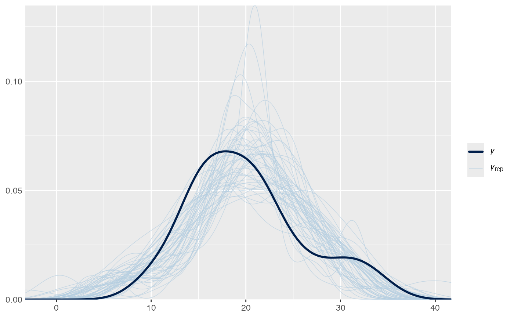
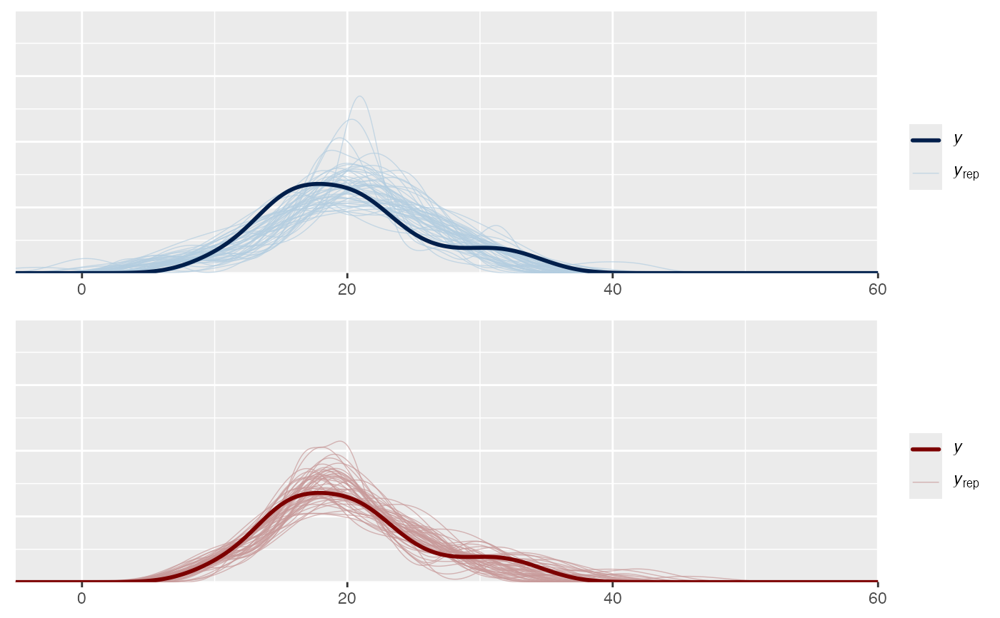

Arrange plots in a grid
bayesplot_grid.RdThe bayesplot_grid function makes it simple to juxtapose plots using
common \(x\) and/or \(y\) axes.
bayesplot_grid(..., plots = list(), xlim = NULL, ylim = NULL, grid_args = list(), titles = character(), subtitles = character(), legends = TRUE, save_gg_objects = TRUE)
Arguments
| ... | One or more ggplot objects. |
|---|---|
| plots | A list of ggplot objects. Can be used as an alternative to
specifying plot objects via |
| xlim, ylim | Optionally, numeric vectors of length 2 specifying lower and upper limits for the axes that will be shared across all plots. |
| grid_args | An optional named list of arguments to pass to
|
| titles, subtitles | Optional character vectors of plot titles and
subtitles. If specified, |
| legends | If any of the plots have legends should they be displayed?
Defaults to |
| save_gg_objects | If |
Value
An object of class "bayesplot_grid" (essentially a gtable object
from gridExtra::arrangeGrob()), which has a plot method.
Examples
y <- example_y_data() yrep <- example_yrep_draws() stats <- c("sd", "median", "max", "min") color_scheme_set("pink") bayesplot_grid( plots = lapply(stats, function(s) ppc_stat(y, yrep, stat = s)), titles = stats, legends = FALSE, grid_args = list(ncol = 1) )#>#>#>#>library(rstanarm) mtcars$log_mpg <- log(mtcars$mpg) fit1 <- stan_glm(mpg ~ wt, data = mtcars, refresh = 0) fit2 <- stan_glm(log_mpg ~ wt, data = mtcars, refresh = 0) y <- mtcars$mpg yrep1 <- posterior_predict(fit1, draws = 50) yrep2 <- posterior_predict(fit2, fun = exp, draws = 50) color_scheme_set("blue") ppc1 <- ppc_dens_overlay(y, yrep1) ppc1ppc1 + yaxis_text()# make sure the plots use the same limits for the axes bayesplot_grid(ppc1, ppc2, xlim = c(-5, 60), ylim = c(0, 0.2))# remove the legends and add text bayesplot_grid(ppc1, ppc2, xlim = c(-5, 60), ylim = c(0, 0.2), legends = FALSE, subtitles = rep("Predicted MPG", 2))